本文章將介紹 telegraf 收集完資料傳到 influxdb 後 grafana 抓取資料建立圖表
一、第一次建好登入可以看到首頁 install grafana 顯示打勾圖案，代表那個步驟完成了，所以接下來我們要做下個步驟點擊 add data source，這個步驟是在配置我的數據來源 ex：influxdb、elasticsearch…
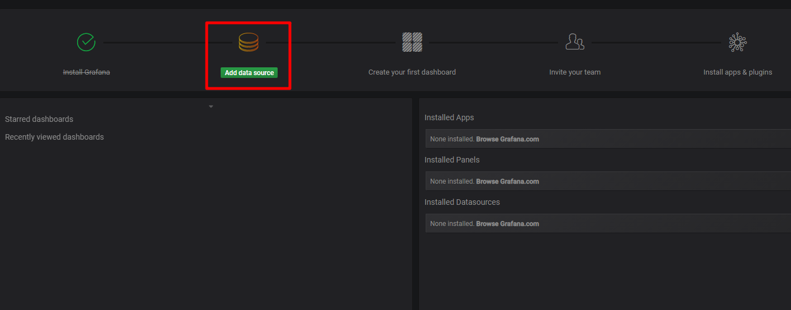
也可以到左邊列表點擊齒輪，選擇 data sources
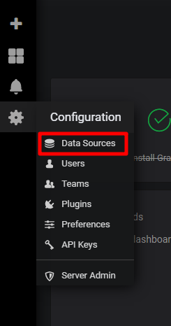
二、開始配置 data sources
進入畫面
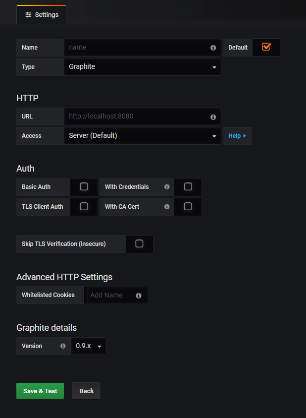
type 選擇 influxdb
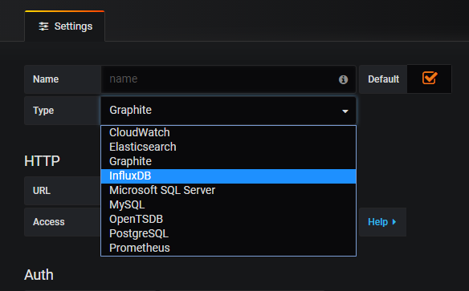
http 輸入 http://influxdb:8086，database 輸入你在 telegraf 設定的名稱
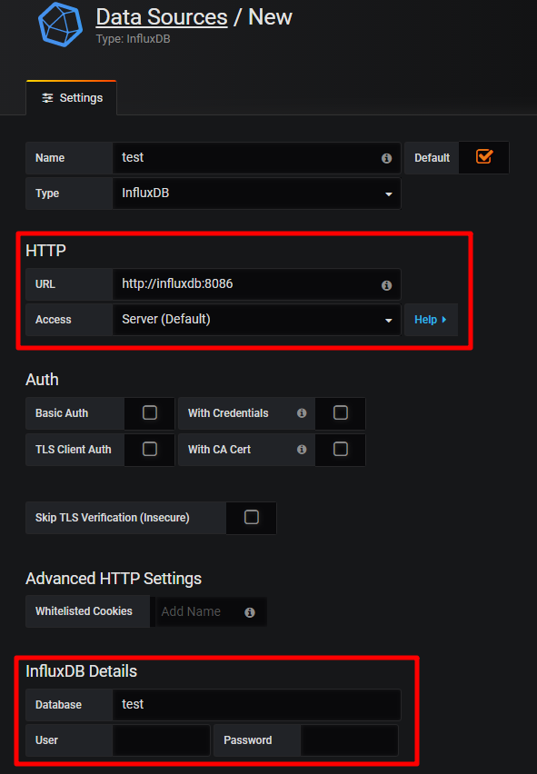
接下來到最下面，點擊 save & test 資料都正確且有抓到右上角就會顯示 datasource added
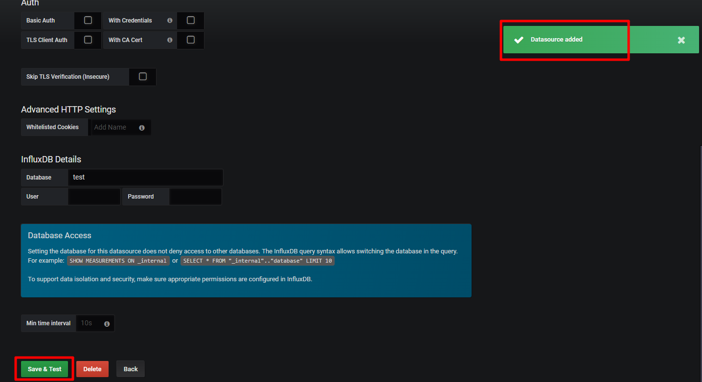
回到 data sources 畫面，就會看到已經新增的 data sources
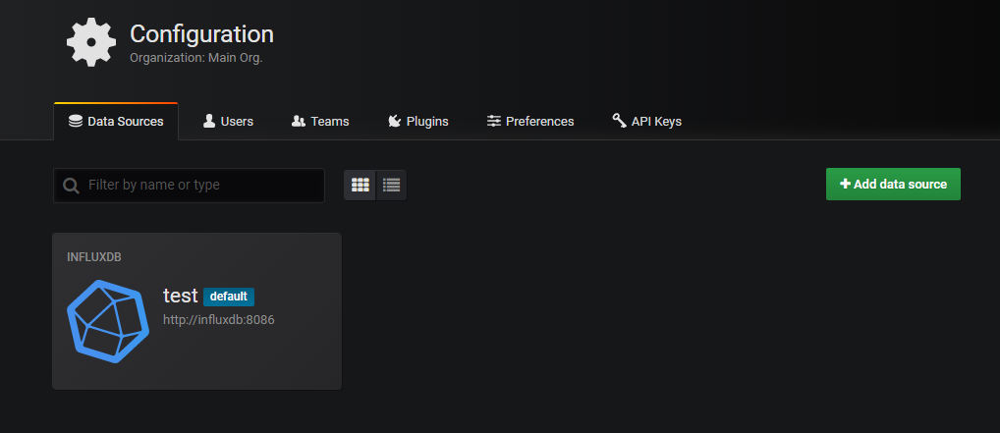
三、拉圖表測試
點擊左邊列表四個方塊，選擇 home 回到首頁
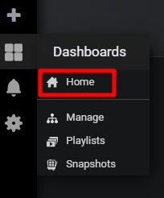
選擇 new dashboard
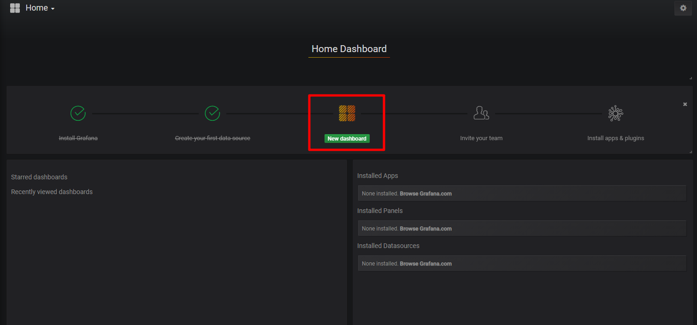
或是左邊列表點擊 + 選擇 dashboard
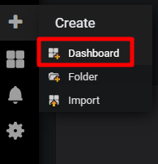
選擇想要的圖表類型
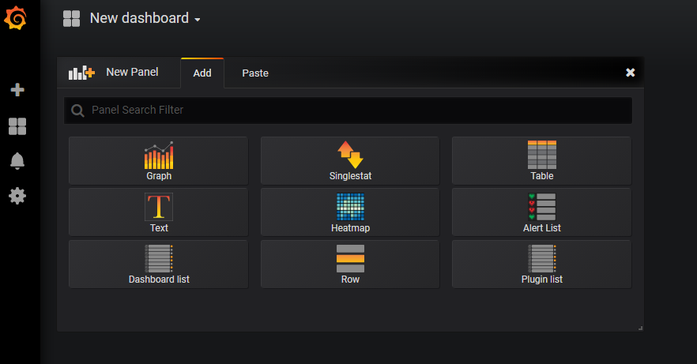
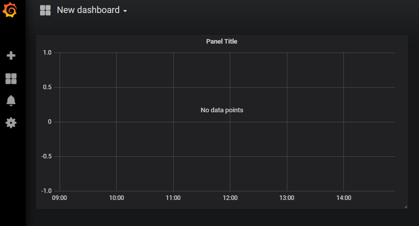
點擊 panel title 選擇 edit 編輯圖表
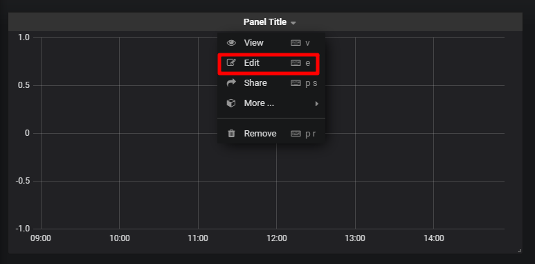
進入畫面
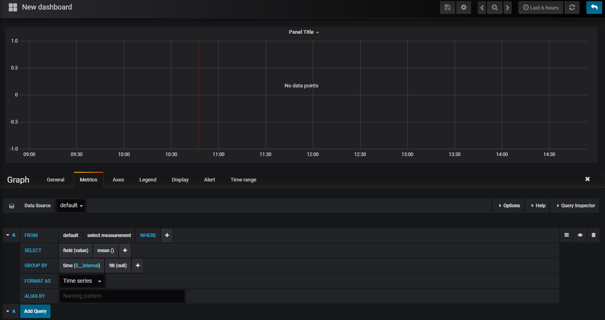
在 data source 選擇你建立好的 data source
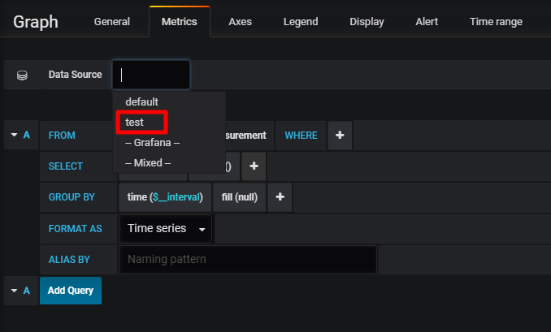
如圖下方調整你想看的參數，設定有正確上方就會顯示數據
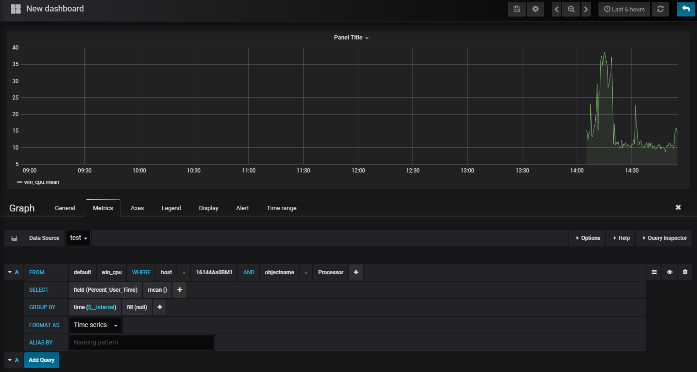
記得儲存
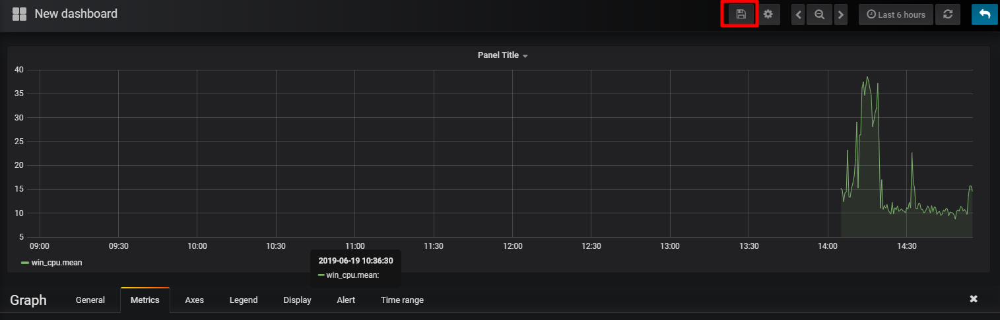
回到 dashborad 就可以看到你拉好的圖表，可以拉好幾個不同種類的圖表，依個人喜好製作自己的監控圖吧
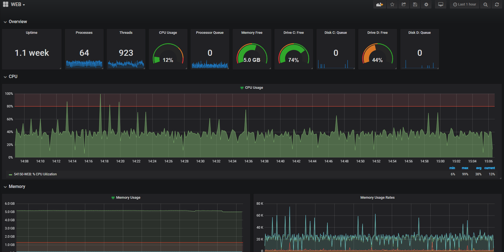